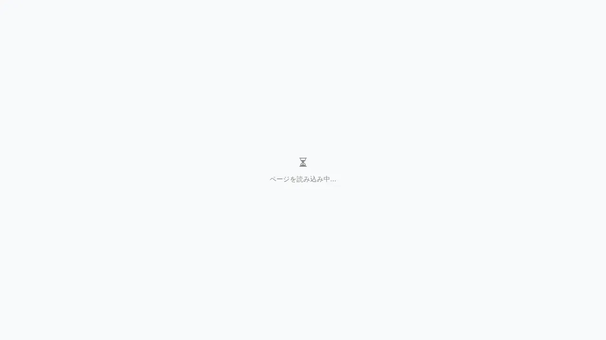

AI 設定
対象画面:
CodexSettingsView(frontend/src/components/codex/CodexSettingsView.tsx) ルート:/ai-settings(top-level) 種別: シングルトンタブ
概要
AI 連携 (Codex CLI / Claude Code) の設定画面。Codex の availability 確認、API endpoint / model 選択、stop-time review gate の有効化、プロジェクト固有の prompt template などを編集する。/codex:setup skill と同等の設定を UI から行える top-level 画面。
到達経路
- ヘッダー右の AI ステータスインジケータ → 「AI 設定」
- HeaderMenu → 「AI 設定」
- 直接 URL:
/ai-settings(workspace 不要、top-level route)
画面構成

主要エリア
- ヘッダー — タイトル「AI 設定」
- Codex availability — ローカル
codexCLI の検出 / version / login 状態 - モデル選択 — Codex / Claude のモデル / reasoning effort
- review gate —
/codex:setupで toggle する stop-time review の有効化チェック - prompt 設定 — project 固有の system prompt 追記 / 出力 token 上限 / temperature
主要操作
| 操作 | 手段 | 結果 |
|---|---|---|
| Codex availability 確認 | 「再確認」ボタン | CLI / config を再 scan |
| Codex login | 「ログイン」ボタン | codex login 起動 (ターミナルで対話) |
| review gate 切替 | チェックボックス | .codex/config.toml に反映 |
| モデル変更 | dropdown | 即時保存 |
| reset to defaults | 「デフォルトに戻す」 | プロジェクト設定を framework default に戻す |
データ前提
- Codex 未インストール: availability セクションで warning + install 案内 link
- 意味のある状態: Codex CLI install 済 + login 済 +
.codex/config.tomlあり
関連仕様書
- なし (本機能は
.codex/config.tomlschema のみ、spec は memoryproject_framework_research_2026_04_25.md参照) docs/user-guide/troubleshooting.md— AI 接続トラブル
関連 skill
/codex:setup— Codex CLI 準備確認 / stop-time review toggle/codex:rescue— タスク委譲 (Codex に複雑なタスクを依頼)
既知の制約・注意
- top-level route (
/ai-settings、/workspace/prefix なし) — workspace 不要で開ける - Codex の API key 等は
.codex/config.tomlで管理、本 UI ではトグルのみ - Claude Code (CLI) 側の認証は本画面では扱わない (Claude Code 側の
claude login等)